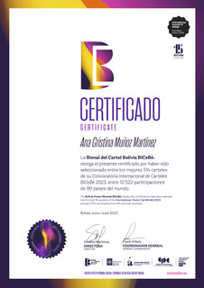
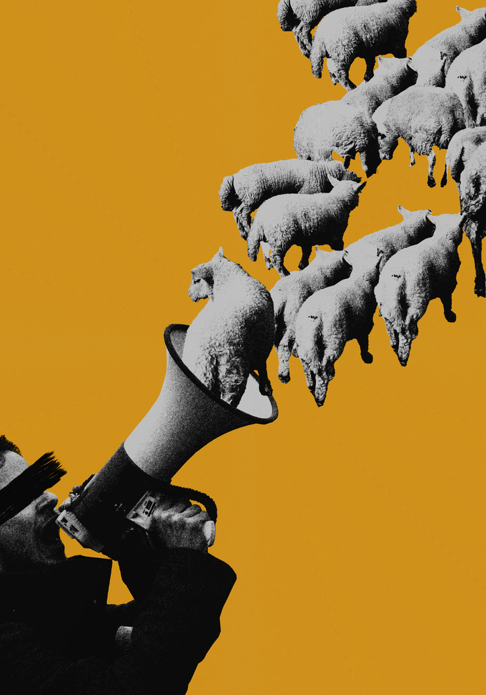
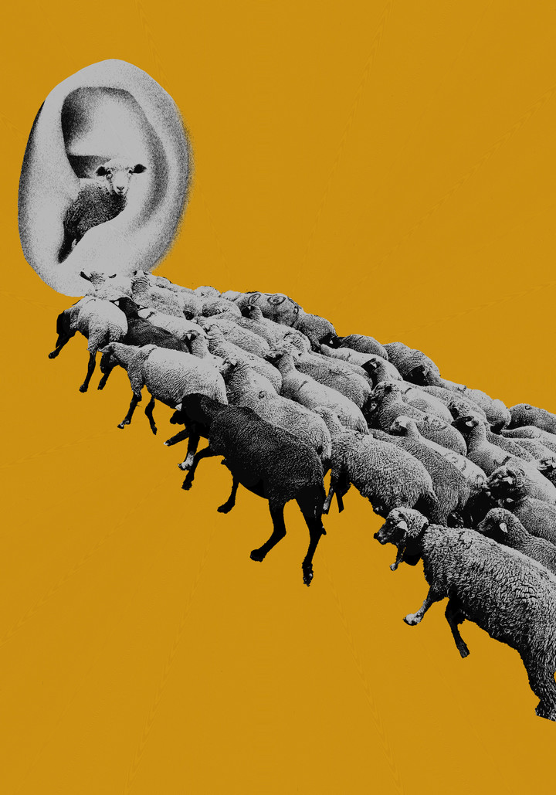
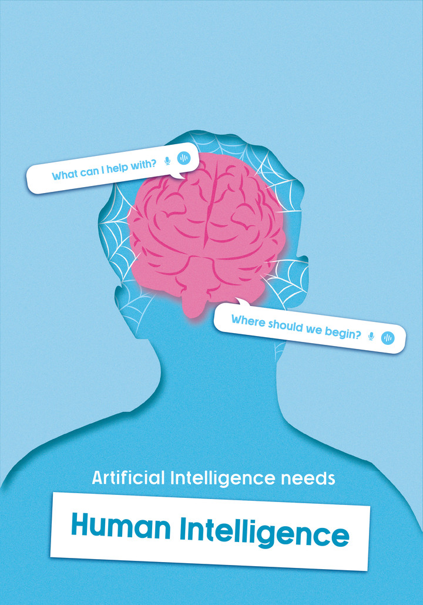
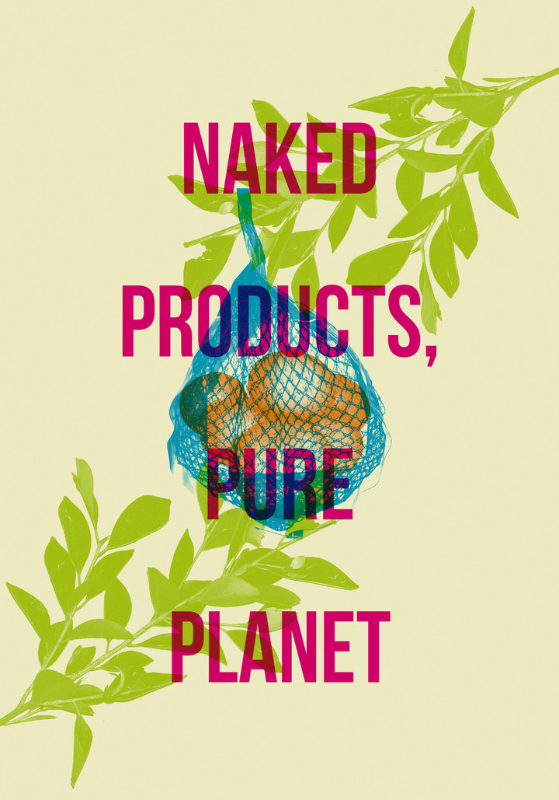
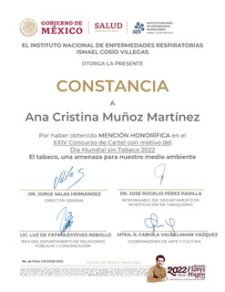
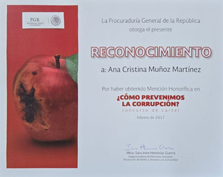

Selection
Poster Exhibition
Main exhibition · BiCeBé

Selection of posters created for design competitions and open calls, accompanied by the recognitions received.






Selected work

Selection
Main exhibition · BiCeBé

Honorable Mention
INER

Honorable Mention
PGR